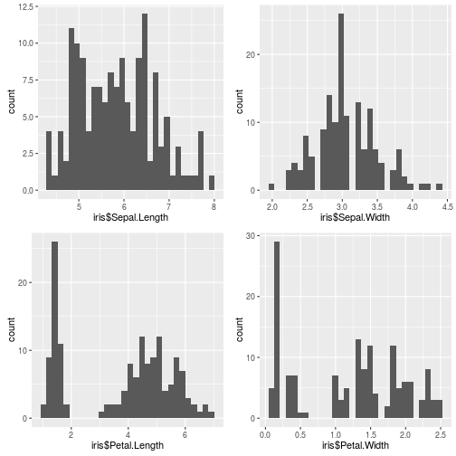

Edgar Anderson collected the data

Ronald Aylmer Fisher made the linear discriminant
Sergio H S Quadros
Developing Data Products at Coursera
Edgar Anderson collected the data
Ronald Aylmer Fisher made the linear discriminant
The observations by each species:
##
## setosa versicolor virginica
## 50 50 50
How many distributions?

Some error at integration between Shiny and Slidify; the same alone shiny app works well.